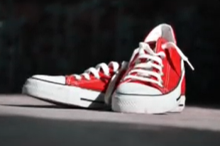
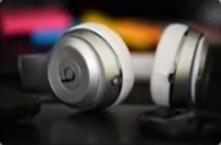

CASE STUDY BETWEEN GOOGLE LENS AND MOBILENET
GOOGLE LENS
VS
Mobilenet
Test 1: Image-
Output on GOOGLE LENS - Water Bottle
Output on MOBILENET - Water Bottle
Result:- Draw
Test 2: Image-
Output on GOOGLE LENS - Canvas Shoes
Output on MOBILENET - Running Shoes
Result:- Google Lens is more accurate.
Test 3: Image-
Output on GOOGLE LENS - Headphones
Output on MOBILENET - Microphone, Mike
Result:- Google Lens is more accurate.
Test 4: Image-

Output on GOOGLE LENS - Soft toy
Output on MOBILENET - Microphone, Mike
Result:- Google Lens is more accurate.
Test 5: Image-
Output on GOOGLE LENS - Bed, Pillow, Blanket
Output on MOBILENET - Bathtub, Bathing Tub, Bath, Tub
Result:- Google Lens is more accurate.
Conclusion:
5 images shown above were tested.
According to my casestudy, Google lens is more accurate than Mobilenet.
5 images shown above were tested.
According to my casestudy, Google lens is more accurate than Mobilenet.